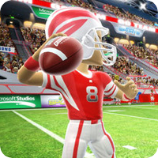

 Kinect Sports
Details
 |
|
| Playtime | Not Played |
| Last Activity | 4/28/2014 19:38:03 |
| Added | 4/24/2025 1:30:35 |
| Modified | 4/30/2025 7:53:26 |
| Completion Status | Not Played |
| Library | Xbox |
| Source | Xbox |
| Platform | Microsoft Xbox 360 |
| Release Date | 11/4/2010 |
| Community Score | 66 |
| Critic Score | 73 |
| User Score | |
| Genre | Sports |
| Developer | Rare |
| Publisher | Microsoft Game Studios |
| Feature | Multiplayer Single Player |
| Links | Wikipedia Kinect Sports at xbox.com Kinect Sports at Rare MobyGames |
| Tag | [People] composer: David Clynick [People] composer: Robin Beanland |
Description
Kinect Sports is a sports video game developed by Rare and published by Microsoft Game Studios for the Xbox 360. The game utilizes the Kinect motion-sensing peripheral and was released in North America on 4 November 2010 as a launch title for Kinect, then, a few days later, in Europe and Australia.
The game is a collection of six sports simulations and eight mini-games, designed to demonstrate the motion-sensing capabilities of Kinect. The six sports included are: ten-pin bowling, boxing, track and field, table tennis, beach volleyball and association football ("soccer" in North America). Standing in front of the Kinect sensor, players compete by mimicking actions performed in real-life sports, such as throwing a javelin or kicking a football.
The game received generally positive reviews from critics and sold over three million units as of April 2011. A sequel to the game, Kinect Sports: Season Two, developed by Rare and BigPark, was released in October 2011. Along with its sequel, Kinect Sports has been released in the Kinect Sports Ultimate Collection bundle on 18 September 2012, with additional bonus content and extra sports in Season Two added, basketball, golf and skiing. A third entry, Kinect Sports Rivals, was released for the Xbox One in 2014.
Gameplay
All six of the events in Kinect Sports support multiplayer both locally and online, with a mixture of competitive and cooperative play options. In addition, players can also take part in eight sport-based mini games, or join in the Party Play mode designed to accommodate a larger number of players amassed in the same room, divided into two teams.
Players are represented in-game by their Xbox 360 avatar. Using the Kinect sensor, the player's physical gestures and body movements are tracked and translated into in-game actions without the need for a controller.
At the end of each event, players are shown a video compilation of their 'best bits' captured by the Kinect sensor. Clips can be uploaded to the KinectShare website where they can be downloaded, deleted or shared directly with Facebook.
Sports
Bowling takes place at Neon Lanes. Players are required to reach to their left or right to take up a ball before swinging their arm forwards to bowl, exaggerating the arm motion to add spin if required. Single player, local multiplayer and online multiplayer game modes are available. Bowling mini games include One Bowl Roll, in which the player must clear as many pin setups as possible before running out of chances, and Pin Rush, where the player is challenged to knock over as many pins as possible within a time limit.
Boxing takes place at Tornado Gardens. Players are encouraged to use their left and right arms to punch and block, both at head and body height. Single player, local multiplayer and online multiplayer game modes are available. It is the only sport without any mini games.
Track & Field is a collection of five separate events, all of which take place at Flame Stadium. The events are Sprint, Javelin, Long Jump, Discus and Hurdles. Each event can be played individually (within the Mini Games area) or collectively as a pentathlon. Players must jog on the spot to run, jump to clear hurdles or make a long jump, and perform the relevant arm motion to throw a javelin or discus. Single player, local multiplayer and online multiplayer game modes are available.
Table Tennis takes place at the Blade Center. Players are required to reach to their left or right to pick up a paddle before serving, and can then incorporate topspin, backspin and smash shots. Single player, local multiplayer and online multiplayer game modes are available. Table Tennis mini games include Paddle Panic, in which the player must take up a paddle in each hand and return as many balls as possible within a fixed time limit, and Rally Tally, where the player is challenged to maintain a single rally for as long as possible.
Soccer takes place at Lotus Park. As an attacker, the player is required to kick the ball to pass or shoot. As a defender, the player is encouraged to move from side to side to block passes and use their full body to block shots. Single player, local multiplayer and online multiplayer game modes are available. Soccer mini games include Super Saver, which puts the player in goal trying to block the striker's shots, and Target Kick, in which the player must beat the goalkeeper and launch the ball at goal-based targets.
Beach Volleyball takes place at Waveside. Players serve by making an upward throwing motion with one hand and then a swinging motion with the other. The ball is passed or returned using bump, set and spike motions. Single player, local multiplayer and online multiplayer game modes are available. Beach Volleyball mini games include Bump Bash, in which the player must avoid as many thrown objects as possible, and Body Ball, where the player is required to return the ball using a specific body part.
On 14 December 2010, a free downloadable Samsung-sponsored 'Party Pack' was made available for the game. The pack included six new mini games (one per sport: King of the Ring, Rapid Runner, Super Striker, Target Smash, Fruit Splatter and Pinvaders), and three new Party Play mascots.
On 26 April 2011, a 'Calorie Challenge' game add-on was released. It introduced the titular mode in which players compete in a series of events against food-themed mascots. Players are tasked with burning a specific number of calories within an allotted time limit to complete each challenge.
Development
Kinect Sports was first previewed at the Electronic Entertainment Expo in June 2010. It was also previewed at Microsoft's Cirque du Soleil event and subsequently launched alongside the Kinect peripheral in North America on 4 November 2010, in Europe on 10 November 2010, and in Australia on 18 November 2010.
Kinect Sports features a front end and Party Play voiceover recorded by Peter Dickson and a number of licensed music tracks from artists including Queen, Robbie Williams, MC Hammer and Gwen Stefani. Celebratory stings from these tracks are used throughout the game when players score a goal, achieve a strike, break a record or win an otherwise crucial point.
On 11 November 2010, a Kinect Sports Facebook app was released which sorts times set in the Xbox 360 game into online leagues. Co-developed by Rare and web agency Nzime, the Facebook app uses an Xbox LIVE gamertag to compare results with friends and other players in Kinect Sports, join or create leagues and watch video performances uploaded from the game.
On 23 April 2011, Kinect Sports players set a new Guinness World Record for the largest simultaneous 100m sprint with 10,539 participants.
Reception
The game received above-average reviews according to the review aggregation website Metacritic. In Japan, where the game was ported for release on 20 November 2010, Famitsu gave it a score of 29 out of 40, while Famitsu X360 gave it 30 out of 40.
Video game talk show Good Game gave it 7 out of 10, saying that it didn't feel like a Wii sports game and that you actually had to use your whole body to play it; however they said that the soccer felt a bit brain dead. Overall, they said, "It's a solid sports collection to show off Kinect and it is presented well with lots of great licensed music."
As of April 2011, the game sold over three million units.
Awards
Kinect Sports won an award for the BAFTA Family Game of the Year and was nominated for 5 other awards, including the Golden Joystick Award for Best Sports Game Award of 2011 and Best New IP, Audio Accomplishment and Technical Innovation awards in the Develop Awards 2011. It was a finalist for the New Game Brand award at the 2011 MCV Industry Excellence Awards. During the 14th Annual Interactive Achievement Awards, the Academy of Interactive Arts & Sciences nominated Kinect Sports for "Casual Game of the Year".